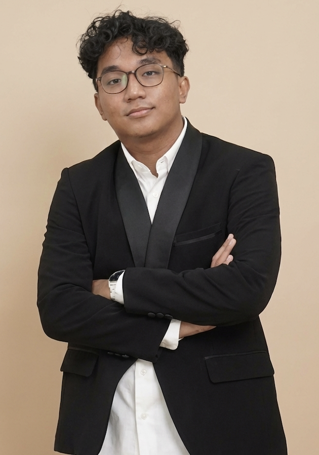

Mahasiswa S1 Sains Data Telkom University. Terbiasa membangun pipeline data end-to-end, mulai dari cleaning, modeling, hingga dashboard untuk menjawab pertanyaan bisnis yang nyata.

Bandung, IDSaya mahasiswa S1 Sains Data, Telkom University dengan ketertarikan di bidang Data Analytics dan Business Analytics. Terbiasa mengerjakan proyek data end-to-end mulai dari data cleaning, exploratory analysis, modeling, hingga penyampaian insight lewat dashboard.
Di luar akademik, saya aktif memimpin program kerja strategis sebagai Kepala Departemen Eksternal di himpunan mahasiswa sains data yang dimana membantu saya untuk mengasah kemampuan manajerial dan komunikasi lintas institusi, yang saya bawa juga ke cara saya mengomunikasikan hasil analisis data.
Saat ini sedang menjalani magang sebagai Data Analyst Intern di Universitas Pertahanan, mengeksplorasi platform SIEM Wazuh dari perspektif data science untuk mendukung analitik keamanan.
Model klasifikasi teks toksik bahasa Indonesia (Normal, Kata Kasar, KBGO) dengan fine-tuning IndoBERT pada 45.569 sampel. Menerapkan Focal Loss & oversampling 4x untuk menangani class imbalance. Macro F1-score 0.87, di-deploy via FastAPI di HuggingFace Spaces.
Membersihkan & menggabungkan 24 file transaksi bulanan (Apr 2024–Nov 2025) dengan pendekatan cleaning kontekstual. Membangun dashboard interaktif di Tableau Public. Insight: 3 kategori produk menyumbang ~40% revenue, cancellation rate 13,64%.
Model klasifikasi performa operasional menggunakan Decision Tree dengan custom composite target variable pada dataset 1.000 job records. Menerapkan stratified 5-fold CV & GridSearchCV, menghasilkan business insight berbasis decision rules.
Pipeline ML end-to-end untuk prediksi harga pakaian dari 5 fitur kategorikal. Feature engineering (target encoding, interaction features) memperluas 5 menjadi 16 fitur. Model tuned menurunkan MAE 29% dengan CV MAE stabil 46.95 ± 1.49.
Telkom University · IPK 3.63/4.00 · Skor ECCT 3.75 · Skor EPrT 487
Jurusan IPA · Nilai 87,01
Udemy